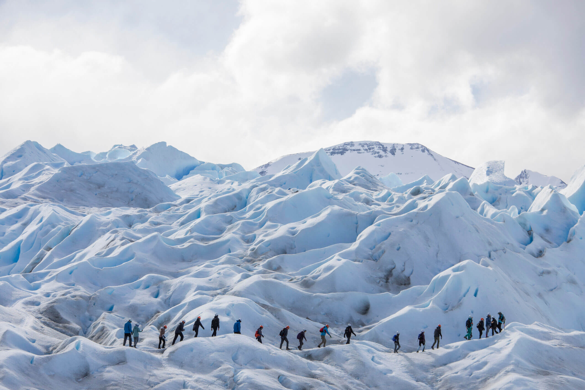
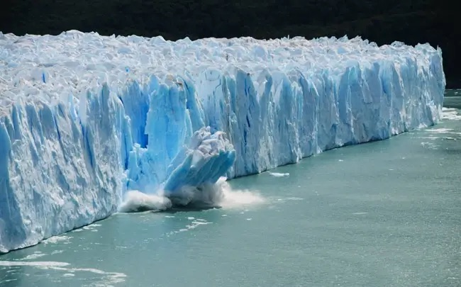
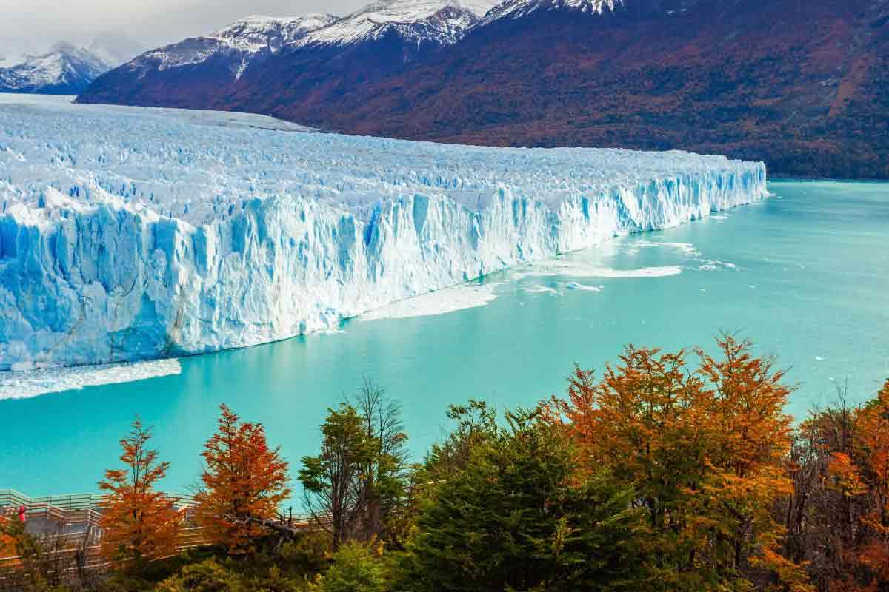

Le Perito Morino est un Glacier de 170m de hauteur dont 74 sont émergé sous l’eau, 30km de long et a une surface de 250km^2. Son front (la limite basse d'un glacier pouvant prendre la forme d'une falaise, d'une colline, d'un amas désorganisé de glace[Wikipédia]) fait environ 5000m de longueur.
Ce glacier a été baptiser du nom de l’explorateur Francisco Moreno qui à étudier les régions du glacier et avec Perito qui signifie “expert”. Il permet de faire la frontière entre l’Argentine et le Chili.
Ce glacier à pour la particularité d’avancer de 2m par jour. Il compose la principale attraction touristique du Sud de la Pantagonie Argentine et un restaurant à même été construit dessus.
Grâce à sa taille impressionnante et à sa facilité d’accès, le glacier Perito Moreno compte parmi les principales attractions touristiques du sud de la Patagonie argentine.
Deux type d’excursion (trekking) y est proposé par des agences :
“mini-trekking” : une marche d’environ 1h30-2h sur le glacier.
Big-ice” : une exploration plus approfondi du glacier qui dure environ 5h. Des crampons seront nécéssaire mais pourrons être fournis par les agences en cas de besoin.

Les velages :
Cet énorme Glacier se brise en “velage” ce sont des bloc de glace qui se détache d’un glacier et qui provoque la formation d’iceberg.
La première formation de velage au glacier Perito Morino à été observé en 1917, cet évènement a été observé 22 fois depuis et la dernière fois était en 2018.
les Velages chutes dans le lac Argentino peut se produire à n’importe quel moment de l’année.

image d'un velage qui se brise et chute
Localisation :
Le glacier est situé au Sud de l’argentine et à l’Est du Chili. Au Sud de la Patagonie Argentine dans les deux parcs nationaux Bernardo O’Higgins et Los Glaciares.
Situé à moins de deux heures de route d’El Calafate, il est desservi par les mêmes agences qui proposent des excursions quotidienne.

Modalité :
Pour accéder au Perito morino et faire du “trekking” (exploration du glacier) il faut payer l’entré du parc national 45 000 peso argentin ce qui représente à peu près 41€.